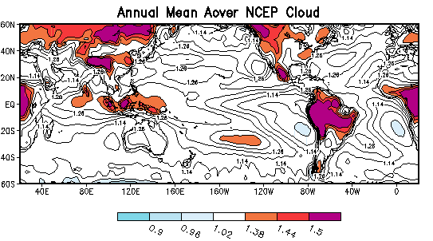

(1)
(1)The aim of this diagnostic subproject is to make as direct as possible quantitative comparisons of seasonal and ENSO variations ofAMIP II cloud output and the best available observations. This will be done with a full recognition of the uncertainties in the observations and the considerable differences in the nature of the available observations and the model output.
One of the best available monthly global cloud data sets is the new ISCCP D2 product, which includes total cloud fraction and optical depth, as well as cloud amounts, liquid and ice concentrations, temperature and pressure for nine cloud height and optical thickness categories. These data are based upon threshold estimates of cloud combined with radiative transfer inferences of cloud properties. An important aspect of these data is that they represent cloud properties as seen from space rather than the layer quantities available from models. Other possibly useful cloud data are global summaries of surface-based observations, and a summary of three-layer cloud amounts based upon a combination of satellite and surface data (Weare, 1999).
The available AMIP II cloud products include total cloud amounts and cloud water, and liquid and ice water contents and cloud amounts at standard pressure or model levels. The AMIP II total cloud cover and water content are in principle directly comparable to the ISCCP observations. However, it is not possible to directly compare the AMIP II and D2 cloud properties as a function of height. Either the D2 estimates as seen from above must be transformed to model layer values, or the model layer cloud parameters must be transformed to simulate the satellite view. The latter transformation requires knowledge of how cloud layer information is utilized in the model radiative transfer calculations to derived top-of-atmospheric fluxes. However, the required model 'overlap assumption' is not readily attainable from standard model output, may be a strong function of model resolution, and may not be agreement with that of the real atmosphere.
Total cloud amounts and water content of the AMIP II models will be compared with ISCCP D2 and C2 estimates following the methodology of Weare et al. (1995). This should provide a baseline for evaluating changes in the overall state of the simulation of clouds in models and changes between AMIP I and II. Emphasis will be on simple statistics characterizing the agreement between models and observations for the seasonal cycle and the major ENSO events.
In order to compare model cloudiness as a function of height with observations, new methodologies will be derived and tested to overcome as much as possible the incompatibilities between the model and observed clouds. One approach is to define a simple overlap parameter, which approximately characterizes the overlap assumption made in the model radiative transfer calculations. Assuming that the reported total cloud amount is that utilized in the radiation calculations, then it is possible to defined an overlap parameter aover, such that
(1)

clt, clwvi, clivi, cl, clw, cli and perhaps various top of atmosphere and surface radiative components.
Weare, Bryan C., Igor I. Mokhov and the AMIP Modeling Groups, 1995: Evaluation of total cloudiness and its variability in the Atmospheric Model Intercomparison Project, J. Climate, 8, 2224-2238
Weare, Bryan C. , 1995: Evaluation of total cloudiness in AMIP during ENSO. Proceedings of the International Scientific Conference on Tropical Ocean Global Atmosphere (TOGA) Programme. WCRP-91, WMO/TD717, 638-642.
Weare, Bryan C. and the AMIP Modeling Groups, 1996: Evaluation of the vertical structure of zonally averaged cloudiness and its variability in the Atmospheric Model Intercomparison Project. J. Climate, 9, 3419-3431.
Weare, Bryan C. , 1997: Climatic Variability of Cloud Radiative Forcing. Quart J. Royal Meteor. Soc., 123, 1055-1074.
Weare, Bryan C. , 1997: Comparison of NCEP/NCAR cloud radiative forcing reanalyses with observations. J. Climate, 10, 2200-2209.
Weare,
Bryan C. , 1999: Combined satellite- and surface-based observations of
clouds. J. Climate, 12, 897-913.
UCRL-MI-127350